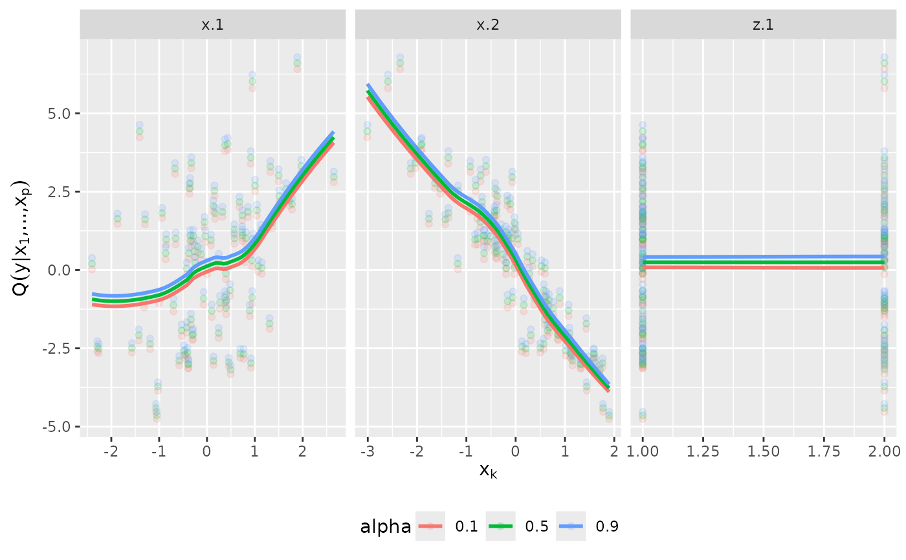

The marginal effects of a variable is the expected effect, where expectation is meant with respect to all other variables.
Usage
plot_effects(object, alpha = c(0.1, 0.5, 0.9), vars = object$order)Examples
# simulate data
x <- matrix(rnorm(200), 100, 2)
y <- x %*% c(1, -2)
dat <- data.frame(y = y, x = x, z = as.factor(rbinom(100, 2, 0.5)))
# fit vine regression model
fit <- vinereg(y ~ ., dat)
plot_effects(fit)
#> `geom_smooth()` using method = 'loess' and formula = 'y ~ x'
#> Warning: pseudoinverse used at 0.995
#> Warning: neighborhood radius 1.005
#> Warning: reciprocal condition number 0
#> Warning: There are other near singularities as well. 1.01
#> Warning: pseudoinverse used at 0.995
#> Warning: neighborhood radius 1.005
#> Warning: reciprocal condition number 0
#> Warning: There are other near singularities as well. 1.01
#> Warning: pseudoinverse used at 0.995
#> Warning: neighborhood radius 1.005
#> Warning: reciprocal condition number 0
#> Warning: There are other near singularities as well. 1.01
